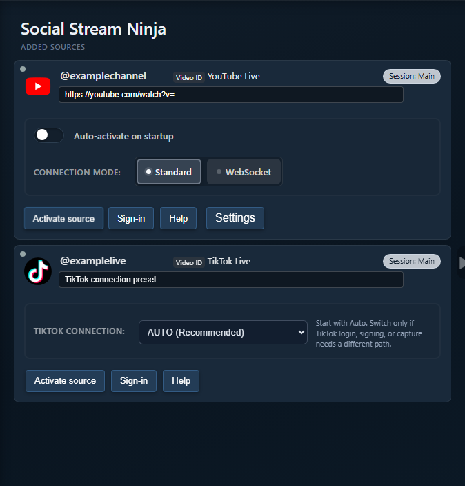

Inizia dalle basi
Aggiungi TikTok nell'app desktop e lascia il preset su Auto, a meno che tu non stia risolvendo un problema specifico.

Selettore modalità
| Modalità | Usa quando | Cosa osservare |
|---|---|---|
| Automatico | Prima configurazione normale. | L'app potrebbe passare attraverso stati di ripiego. |
| Standard | Ti serve l'acquisizione della pagina visibile oppure l'accesso/la verifica manuale. | Reindirizzamenti, CAPTCHA, chat nascosta o URL live errato. |
| Local Signer | Ti servono i percorsi di lettura nativi dell'app o quelli che supportano le risposte. | La sessione/i cookie TikTok nell'app devono essere validi. |
| Compatibilità (WebSocket) | Per provare le impostazioni del connettore di compatibilità. | In precedenza chiamata Polling. Richiede ancora la firma nell’app attuale; non permette risposte. Consulta la guida alla firma. |
| Firma proxy/personalizzata | Configurazione avanzata con requisiti di provider/chiave API. | Limiti del provider, ID stanza, errori di firma e limiti di frequenza. |
Cosa raccogliere quando non funziona
- Versione dell'app desktop e stato di attivazione della modalità beta.
- Preset/modalità TikTok attualmente selezionati.
- Testo di stato o messaggio di errore esatto dell'app.
- Se nell'app è stato effettuato l'accesso all'account TikTok.
- Se la chat è visibile nella pagina live in modalità Standard.
- Se il dock riceve qualcosa prima di provare OBS.
Controllo dei siti supportati
Per la configurazione TikTok di base nell'estensione browser, usa prima la nota pubblica sulla configurazione TikTok.

Soluzioni ai problemi comuni
- Auto non funziona: prova Standard per verificare che pagina visibile e accesso funzionino.
- Standard reindirizza: mostra la pagina di acquisizione, controlla nome utente/URL live e completa la verifica TikTok se richiesta.
- Le risposte non funzionano: controlla la sessione/i cookie TikTok e se la modalità corrente supporta l'invio di risposte.
- Messaggi duplicati o mancanti: chiudi finestre/schede duplicate delle sorgenti TikTok e prova una modalità alla volta.
Correlati: Guida TikTok e Modalità dell'app autonoma.